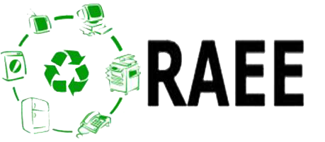

Aparatos eléctricos y electrónicos (RAEE): aparatos que necesitan corriente eléctrica o campos electromagnéticos para funcionar.
Disposición final: Proceso de aislar y confinar los residuos solidos en especial los no aprovechables en forma no definitiva.
Gestión integral: Conjunto articulado e interrelacionado con el fin de darle la disposición final adecuada a los residuos solidos.

R.A.E.E nuevo: Residuos de aparatos que no son puestos en el mercado después de la entrada en vigencia de la reglamentación que expida el gobierno nacional sobre R.A.E.E o en el termino que allí se establezca.
R.A.E.E histórico: Residuos de aparatos que son puestos en el mercado antes de la reglamentación de gobierno nacional.
R.A.E.E huérfano: Residuos de aparatos que no tienen una marca de identificación o el productor ya no se encuentra en el mercado.
Para los componentes y partes que no pudieron ser integrados a los procesos de recuperación y a
provechamiento, se identifican actividades de manejo integral incorporado a procesos de generación
de valor energético de estos materiales. Estos procesos son:
Fundición: Permite recuperar metales ferrosos y no ferrosos de los RAEE y a su vez son generadores
de valores energéticos para uso.
Refinación térmica o química: Se separan los metales preciosos de los RAEE,
este proceso es costoso y complejo; se puede llevar a cabo por medio de procesos con catalizadores,
la pirolisis, a través de la fundición o la oxidación, la hidrólisis donde los RAEE son disueltos en agua
regia ( compuesta de acido clorhídrico y acido nítrico)